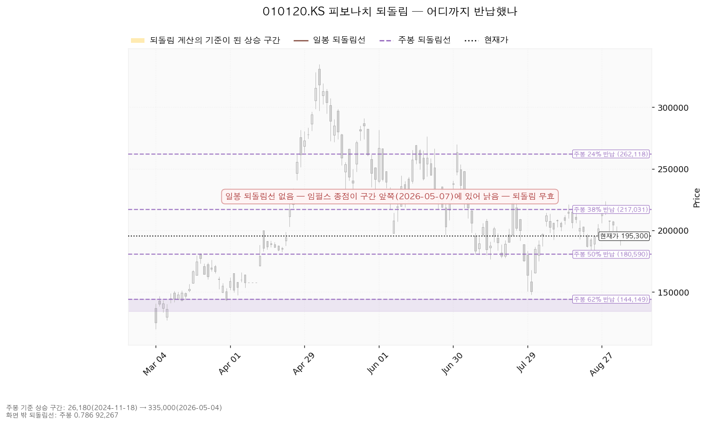
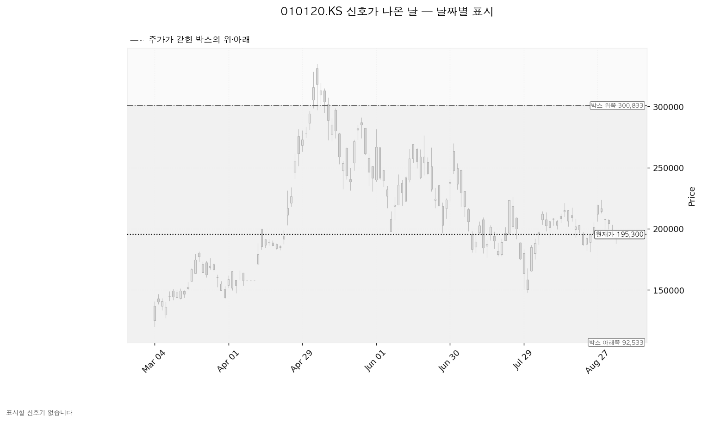
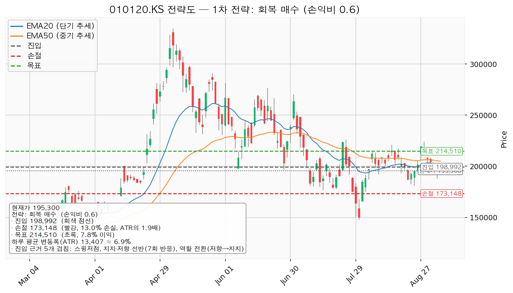
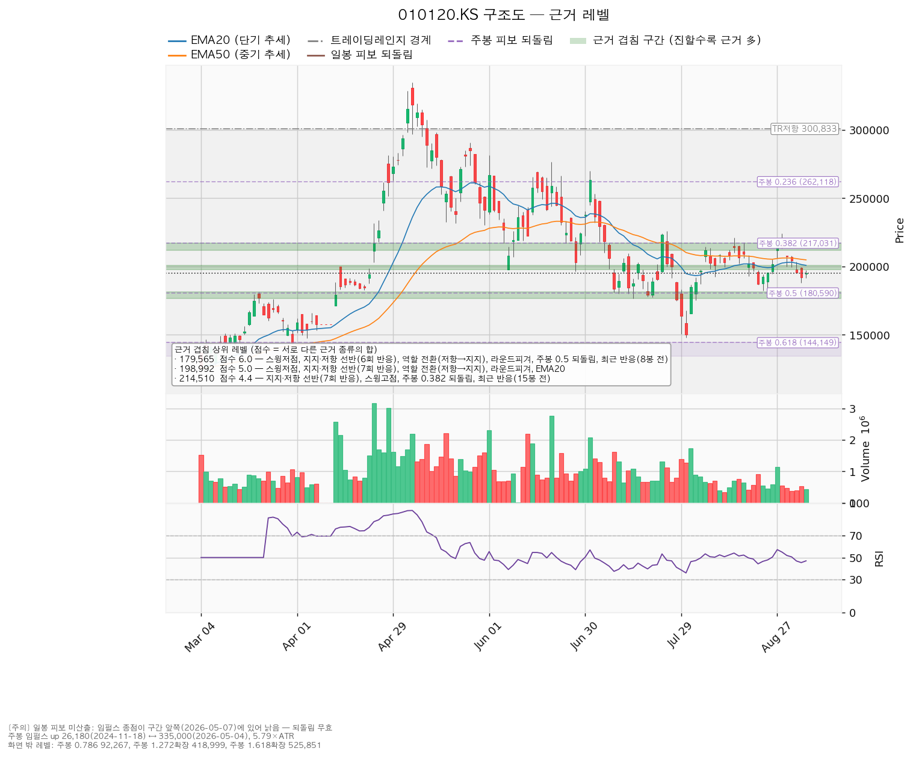

LS ELECTRIC(010120.KS)은 배전반·차단기·변압기 같은 전력기기와 전력 계통 자동화 설비를 만드는 한국 기업이며, 데이터센터·산업 설비용 전력 인프라와 해외 수출 비중이 큽니다.
| 구분 | 가격 | 판정 방식 | 현재가 대비 | 상태 |
|---|---|---|---|---|
| 회복선(신규 진입 조건) | 198,992원 | 일봉 종가로 회복한 뒤 되돌림에서 지지되는지 | +1.89% (0.28 ATR) | 회복 대기 |
| 집행 손절 | 173,148원 | 진입한 경우에만 유효 — 미진입 상태에서는 의미 없음 | -11.34% (1.65 ATR) | — |
| 관망 종료 기준 | 179,565원 | 일봉 종가 이탈 | -8.06% (1.17 ATR) | 유지 중 |
| 확인선 | 214,510원 | 일봉 종가 돌파 후 되돌림 지지 확인 | +9.84% (1.43 ATR) | 미돌파 |
| 폐기선(구조) | 92,533원 | 이탈 후 3거래일 내 회복 실패 + 반등에서 저항으로 확인 | -52.62% (7.67 ATR) | 유지 중 · 실무상 작동하지 않음 |
표의 'ATR'은 하루 평균 변동폭(13,407원)을 뜻하며, 레벨까지의 거리를 "평범한 하루 등락의 몇 배인지"로 환산한 값입니다.
| 직전 리포트가 건 조건 | 결과 |
|---|---|
| 전량 손절 — 종가 165,400 / 167,367원 이탈 | 미충족. 리포트 이후 가장 낮은 종가는 9/3의 192,100원으로, 두 선 근처까지도 내려가지 않았습니다 |
| 1차 축소 — 종가 180,295원 이탈 | 미충족. 이후 최저 저가가 8/25의 181,200원이라 장중에도 닿지 않았습니다 |
| 축소 구간 194,700원 | 충족 (8/25, 고가 195,500원) |
| 축소 구간 201,551원 | 충족 (8/26, 고가 205,250원) |
| 축소 구간 213,844원 | 충족 (8/27, 고가 219,500원) |
| 회복 매수 셋업 — 종가 213,844원 회복 시 진입 | 충족 (8/27 종가 219,500원). 그 뒤 8/28 고가 224,000원으로 1차 목표 223,500원 도달(+4.52%) → 계획대로 절반 익절, 잔여분 손절을 진입가 213,844원으로 올림 → 같은 날 저가 213,000원, 8/31 종가 207,500원으로 잔여분은 본전 정리. 2차 목표 235,250원은 닿지 않았고, 집행 손절 206,216원은 8/31 저가 199,800원에서 스쳤습니다 |
직전 리포트의 실행 계획은 아래로는 한 번도 발동하지 않았고, 위로는 세 축소 구간이 3거래일 만에 모두 채워졌습니다. 회복 매수 셋업은 1차 목표까지만 맞고 잔여분은 본전이었습니다.
| 항목 | 2026-08-24 | 2026-09-07 | 왜 |
|---|---|---|---|
| 현재가 | 185,300원 | 195,300원 | +5.40% |
| 하루 평균 변동폭 | 15,256원 (8.23%) | 13,407원 (6.86%) | 7월 말 급락 구간이 계산에서 빠지며 축소 |
| 박스 | 167,367 ~ 239,000원 | 92,533 ~ 300,833원 | 박스를 판정하는 구간이 90거래일에서 180거래일로 바뀌었습니다(180거래일 창이 가격을 96.1% 담아 후보 셋 중 가장 잘 맞았습니다). 그 결과 박스가 훨씬 넓어졌고, 폐기선도 함께 멀어졌습니다 |
| 회복선 | (당시 없음) | 198,992원 | 196,500~200,000원 선반이 7회 반응 + 9/4에도 다시 닿아 새로 잡혔습니다 |
| 확인선 | 213,844원 (겹침 3.3) | 214,510원 (겹침 4.4) | 8/28 반응이 더해지며 겹침이 두꺼워졌습니다 |
| 관망 종료 기준 | 180,295원 (겹침 2.1) | 179,565원 (겹침 6.0) | 8/25 저가 181,200원이 실제 반응으로 추가돼 이 문서에서 가장 두꺼운 구간이 됐습니다 |
| 대표 셋업 | 진입 213,844 / 손절 206,216 / 목표 235,250, 손익비 1:2.81 | 진입 198,992 / 손절 173,148 / 목표 214,510, 손익비 1:0.60 | 진입이 아래로 내려온 대신, 손절을 6.0점짜리 지지 구간 아래로 밀어내면서 손절 폭이 1.93 ATR로 넓어졌습니다 |
바뀌었습니다. 직전에는 손익비 1:2.81짜리 회복 매수를 대기 셋업으로 제시했고 그 셋업은 실제로 발동해 1차 목표를 맞혔습니다. 이번에는 같은 유형인데 손익비가 1:0.60으로 1 아래입니다. 진입 후보가 현재가 바로 위로 내려온 반면, 손절을 놓을 만한 지지 구간은 그보다 훨씬 아래(176,500~181,200원)에 있어 손실 폭이 이익 폭보다 커졌기 때문입니다. 그래서 이번 신규 진입 판단은 "패스"입니다. 보유분 관리 기준은 축소 구간이 모두 소진되며 위로 재설정됐고, 자르는 선은 179,565 / 166,867원으로 직전(180,295 / 165,400·167,367원)과 사실상 같은 자리입니다.
직전 리포트에 정정할 오류는 없습니다.
| 지표 | 값 | 읽는 법 |
|---|---|---|
| 현재가 (2026-09-04 종가) | 195,300원 | — |
| 20일 평균가격선 | 200,858원 | 현재가가 아래 (단기 흐름 약함) |
| 50일 평균가격선 | 204,850원 | 현재가가 아래 (중기 흐름 약함) |
| 과열·침체 온도계 (RSI 14) | 46.97 | 중립. 침체 판정선 30까지 여유 |
| 하루 평균 변동폭 (ATR) | 13,407원 | 주가의 6.86% |
| 직전 고점 / 직전 저점 | 224,000원 (8/28) / 181,200원 (8/25) | 8월 말 급등 후 되밀린 상태 |
| 추세 판정 / 국면 | 하락 / 횡보 레인지(구조 유지 — 하단 사수 조건부) | — |
| 주가가 갇힌 박스 | 아래쪽 92,533원 / 위쪽 300,833원 | 유효한 박스입니다(180거래일 창, 가격의 96.1%를 이 안에서 보냄, 폭은 하루 변동폭의 15.54배) |
박스 판정에 쓴 창은 180거래일이며, 조회된 전체 일봉은 729개입니다. 40거래일(폭 4.2배)·90거래일(폭 9.95배)·180거래일(폭 15.54배) 세 창을 모두 시험해 가격을 가장 잘 담은 180거래일 창이 선택됐습니다. 다만 이 창은 5월 고점 335,000원과 7월 저점을 한 박스로 묶은 것이라, 박스 경계는 단기 매매 기준으로 쓰기에 너무 멉니다. 이 리포트가 실제 기준선으로 쓰는 값은 박스 경계가 아니라 근거가 겹치는 가격대들입니다.
박스 안쪽에서 무슨 일이 있었나: 저점은 절상되고 있고, 상승한 날의 거래량이 하락한 날의 1.22배입니다. 이 두 가지 때문에 박스 안쪽은 매집 우위(사는 쪽이 조금 우세)로 판정됐고, 가격이 이 박스로 아래에서 올라와 들어왔으므로 다시 모으는 구간인지 나눠 파는 구간인지 아직 갈리지 않은 상태입니다. 다만 지지 테스트로 기록된 날이 2025-12-29(저가 90,000원)·2026-03-04(저가 120,000원) 두 번뿐이고 지지 테스트 거래량의 추세는 표본이 부족해 계산되지 않았습니다. 이 매집 판정은 어디까지나 180거래일 박스 전체에 대한 것이며, 최근 몇 주의 흐름에 그대로 옮겨 적을 수는 없습니다.
크게 오른 구간의 상승분을 몇 % 토해냈는지로 지지·저항을 잡는 방식입니다.
주봉 기준 상승 구간: 26,180원(2024-11-18) → 335,000원(2026-05-04) (구간 높이는 하루 변동폭의 5.79배)
| 반납 비율 | 가격 | 현재가 대비 | 의미 |
|---|---|---|---|
| 24% 반납 | 262,118원 | +34.21% | 멀리 있는 저항 |
| 38% 반납 | 217,031원 | +11.13% | 확인선 214,510원과 같은 구간을 이룹니다 |
| 50% 반납 | 180,590원 | -7.53% | 관망 종료 기준 179,565원을 구성하는 근거 중 하나 |
| 62% 반납 | 144,149원 | -26.19% | 여기까지 밀리면 대세 상승분의 대부분 반납 |
현재가 195,300원은 50% 반납선(180,590원)과 38% 반납선(217,031원) 사이 한가운데 있습니다. 아래 차트에서 색이 살아 있는 부분이 되돌림 계산의 기준 구간이고, 회색은 계산과 무관한 구간입니다.

이번 계산에서는 신호일이 하나도 나오지 않았습니다. 직전 리포트에서 인용했던 7/28·7/29의 약세 급락과 7/30의 속임수 하락 후 반등은, 박스를 판정하는 구간이 90거래일에서 180거래일로 넓어지면서 박스 경계에서 멀리 떨어지게 됐고 그래서 신호로 집계되지 않았습니다. 신호가 사라진 것은 당시 반등이 없었다는 뜻이 아니라, 지금 기준이 되는 박스에서는 그 자리가 경계가 아니라는 뜻입니다. 아래 차트에도 색으로 표시된 캔들이 없습니다.

| 시나리오 | 조건 | 구조 해석 | 행동 |
|---|---|---|---|
| 상승 전환 | 198,992원 종가 회복 후 지지 → 214,510원 종가 돌파 | 되돌림 지지 확인 후 상승 추세 재개 | 보유분 유지. 다만 이 리포트의 신규 매수는 손익비 때문에 하지 않습니다. 214,510원을 종가로 넘으면 그때 새 셋업으로 다시 잡습니다 |
| 횡보 지속 | 214,510원 아래에서 박스 유지 | 구조는 유지 — 매물을 소화하는 데 시간이 필요한 국면이며 부정 신호가 아닙니다 | 신규 진입 보류. 추적 항목: ① 지지를 시험할 때마다 매도 거래량이 줄어드는지 ② 저점이 계속 절상되는지 ③ 오를 때 거래량과 캔들 폭이 확대되는지. 현재 관측: 저점 절상 중, 상승봉 대 하락봉 거래량비 1.22 |
| 시나리오 폐기 | 박스 아래쪽 이탈 후 3거래일 내 회복 실패 + 반등에서 저항으로 확인 | 매집이 아니라 재분산 — 추가 저점 갱신 가능성 | 포지션 정리 후 새 구조가 만들어질 때까지 관망. 다만 이 조건의 기준가 92,533원은 현재가에서 하루 변동폭의 7.67배 아래라 실무상 작동하지 않습니다. 실제로 쓸 선은 179,565원과 166,867원입니다 |
이 시스템은 매수 방향만 산출합니다(개별 종목에 매도 셋업은 내지 않습니다). 지금은 하락·중립 국면이라 "저항선을 종가로 되찾은 뒤에만 매수로 돌아선다"는 회복 매수 하나만 나왔습니다. 지금 떨어졌으니 싸다고 받는 매수는 이 국면에서 하지 않습니다.
이 셋업이 대표로 뽑힌 이유: 손익비 0.60 × 구조 증명도(회복 확인형) × 진입 근거 겹침 5.0점입니다. 이번에는 산출된 셋업이 하나뿐이라 손익비와 구조 증명도 사이의 선택 문제는 없었습니다. 대신 그 하나가 손익비 1을 넘지 못했다는 것이 이번 결론입니다.
| 항목 | 회복 매수 (유일한 셋업) |
|---|---|
| 방향 | 매수 |
| 엣지의 종류 | 모멘텀 — "저항을 종가로 되찾으면 그 방향이 이어진다"는 전제 |
| 성격 | 자주 틀리고 소수가 크게 맞는 유형. 승률을 기대하는 셋업이 아닙니다(이 유형의 일반적 성격이며, 이 분석에서 실제로 측정한 수치가 아닙니다) |
| 구조 증명도 | 회복 확인형 — 저항을 종가로 되찾은 뒤에만 들어가므로 진입가는 불리하지만 구조가 먼저 증명됩니다 |
| 진입 | 198,992원 (현재가 대비 +1.89%, 0.28 ATR 위) |
| 집행 손절 | 173,148원 — 손절 폭 25,843원 = -12.99% = 1.93 ATR |
| 손절을 그 자리에 둔 이유 | 근거 겹침 구간(176,500~181,200원, 6.0점) 바로 아래입니다. 지지 구간 안쪽이 아니라 그 아래에 두었기 때문에 손절 폭이 넓어졌고, 그만큼 손익비가 낮아졌습니다 |
| 목표 | 214,510원 (진입 대비 +7.80%) |
| 손익비 | 1:0.60 (손절 폭 1.93 ATR) |
| 1차 목표 T1 | 207,425원 — 50% 익절, 손익비 1:0.33 |
| 2차 목표 T2 | 214,510원 — 나머지 50%, 손익비 1:0.60 |
| 전 구간 손익비 | 1:0.46 |
| 하한 손익비 (T1 후 본전 스탑 기준) | 1:0.17 |
| 비중 | 1회 매매 손실 한도를 계좌의 1%로 잡으면 포지션은 계좌의 7.7% (한 종목 상한 13% 이내) |
진입 근거 5개 겹침 (점수 5.0, 구간 197,600~200,858원): 스윙저점 + 지지·저항 선반(7회 반응) + 역할 전환(저항→지지) + 라운드피겨 200,000원 + 20일 평균가격선 목표 근거 4개 겹침 (점수 4.4, 구간 212,000~217,031원): 지지·저항 선반(7회 반응) + 스윙고점 + 주봉 38% 반납선 + 최근 반응(15봉 전)

현재가 추격은 권하지 않습니다. 저항 회복이 확인되기 전이며, 종가 회복을 기다리는 자리입니다. 대신 기다릴 자리는 179,565원(겹침 6.0점, 구간 176,500~181,200원)까지의 되돌림입니다. 참고로 두 평균가격선은 5거래일 뒤 20일선 198,670원 · 50일선 203,119원으로 계산되는데, 이는 현재가 195,300원이 그대로 유지될 경우의 선 위치이지 가격 예측이 아닙니다.
| 단계 | 조건 | 의미 | 행동 |
|---|---|---|---|
| ① 관찰 | 일봉 종가가 198,992원 아래로 마감 | 구조 이탈 시작 — 되돌아 올라오면 속임수 하락일 수 있어 아직 무효가 아닙니다 | 신규 진입만 중단. 집행 손절은 그대로 |
| ② 경고 | 이탈 후 3거래일 안에 종가로 회복 실패 | 저항 회복 실패 가능성이 우세해짐 | 잔여 비중 축소. 반등 시 이 가격에서의 반응 확인 |
| ③ 무효 | 반등이 198,992원에서 막히고 다시 밀림 (지지가 저항으로 전환) | 구조 해석이 틀린 것으로 확정 | 포지션 정리 후 관망 |
집행 손절 173,148원은 이 판정과 무관하게 별도로 작동하며, 장중 일시 이탈은 어느 단계에도 해당하지 않습니다.
위 셋업은 "새로 들어갈 사람"의 좌표입니다. 직전 리포트에 기록된 평단 233,000원 기준으로는 현재 -16.18%이며, 본전까지는 +19.30%가 필요합니다.
| 단계 | 가격 | 근거 (겹침) | 현재가 대비 | 평단 대비 | 할 일 |
|---|---|---|---|---|---|
| 1단계 | 179,565원 | 스윙저점 + 선반(6회 반응) + 역할 전환(저항→지지) + 라운드피겨 180,000원 + 주봉 50% 반납선 + 최근 반응(8봉 전) — 6.0점, 이 문서에서 가장 두꺼움 | -8.06% | -22.93% | 종가 이탈 시 보유분 절반 축소 |
| 2단계 | 166,867원 | 선반(4회 반응) + 역할 전환(저항→지지) + 라운드피겨 170,000원 — 3.3점 | -14.56% | -28.38% | 종가 이탈 시 전량 정리 |
| (이탈 후) | 146,075원 | 주봉 62% 반납선 + 스윙저점 — 3.2점 | -25.21% | -37.31% | 여기까지 밀리는 것이 정리를 미룬 대가입니다 |
직전 리포트가 제시한 축소 구간 세 개(194,700 / 201,551 / 213,844원)는 8/25~8/27에 모두 채워졌습니다. 이번 좌표는 아래와 같이 다시 잡았습니다.
| 가격 | 근거 (겹침 점수) | 현재가 대비 | 평단 대비 | 권장 |
|---|---|---|---|---|
| 198,992원 | 스윙저점, 선반(7회), 역할 전환, 라운드피겨, 20일선 (5.0) | +1.89% | -14.60% | 종가로 못 넘고 막히면 1/3 축소 |
| 207,425원 | 50일선, 라운드피겨 210,000원 (2.1) | +6.21% | -10.98% | 두 평균선 회복 실패 시 추가 축소 |
| 214,510원 | 선반(7회), 스윙고점, 주봉 38% 반납선 (4.4) | +9.84% | -7.94% | 위쪽에서 가장 두꺼운 저항. 최소 절반 정리 권장 |
| 222,900원 | 라운드피겨 220,000원, 스윙고점, 선반(6회) (3.5) | +14.13% | -4.33% | 8/28 고점권 — 잔여 정리 검토 |
확인선 214,510원이 위 표의 정리 구간과 같은 가격인 것은 모순이 아니라 분기입니다. 막히고 되밀리면 그 자리가 정리 지점이고, 일봉 종가로 넘으면 상승 확정이므로 그때는 이 포지션의 연장이 아니라 새 셋업으로 다시 잡습니다.
| 가격 | 점수 | 겹치는 근거 | 구간 | 역할 |
|---|---|---|---|---|
| 179,565원 | 6.0 | 스윙저점, 선반(6회), 역할 전환(저항→지지), 라운드피겨, 주봉 50% 반납, 최근 반응(8봉 전) | 176,500~181,200 | 지지 (관망 종료 기준) |
| 198,992원 | 5.0 | 스윙저점, 선반(7회), 역할 전환(저항→지지), 라운드피겨, 20일선 | 197,600~200,858 | 저항 (회복선) |
| 214,510원 | 4.4 | 선반(7회), 스윙고점, 주봉 38% 반납, 최근 반응(15봉 전) | 212,000~217,031 | 저항 (확인선) |
| 222,900원 | 3.5 | 라운드피겨, 스윙고점 3곳, 선반(6회), 최근 반응(5봉 전) | 220,000~226,000 | 저항 |
| 166,867원 | 3.3 | 선반(4회), 역할 전환(저항→지지), 라운드피겨, 최근 반응(36봉 전) | 165,300~170,000 | 지지 (전량 정리선) |
| 146,075원 | 3.2 | 주봉 62% 반납, 스윙저점, 최근 반응(25봉 전) | 144,149~148,000 | 지지 (정리선 이탈 시 다음 받침) |
| 207,425원 | 2.1 | 50일선, 라운드피겨, 최근 반응(21봉 전) | 204,850~210,000 | 저항 |
| 193,250원 | 1.8 | 라운드피겨 190,000원, 스윙저점 | 190,000~196,500 | 현재가 바로 아래 얕은 지지 |

| 항목 | 값 |
|---|---|
| 목표주가 (23명) | 평균 275,813원 / 최저 180,000원 / 최고 350,000원 |
| 현재가의 위치 | 195,300원 — 최저 목표 180,000원보다 위, 평균까지는 +41.23% |
| 투자의견 | 매수 |
| 후행 PER | 데이터가 제공되지 않았습니다 |
| 선행 PER | 38.47배 (내년 예상 주당순이익 5,077원 기준) |
| 올해 예상 주당순이익 | 3,570원 (범위 3,070~3,978원), 성장률 +85.0% |
| 내년 예상 주당순이익 | 5,077원 (범위 3,521~6,222원), 성장률 +42.2% |
| 90일간 추정치 변화 | 올해 +7.3%, 내년 +16.7% — 상향 |
배수는 후행이 제공되지 않아 선행만 볼 수 있습니다. 선행 38.47배는 이익이 올해 +85.0%, 내년 +42.2% 늘어난다는 전제 위의 숫자이며, 후행 배수가 없으므로 "싸다·비싸다"를 배수 하나로 단정하지 않습니다.
가격 하락의 정체는 사업 악화가 아니라 배수 수축입니다. 최근 90일간 애널리스트의 이익 추정치는 올해 +7.3%, 내년 +16.7%로 올라갔는데 주가는 5월 고점 335,000원 대비 -41.70% 내려와 있습니다. 추정치가 함께 내려갔다면 사업 악화로 읽어야 하지만, 이번은 반대 방향입니다. 다만 이것이 곧 "지금 사도 된다"는 뜻은 아니며, 배수 수축은 시작 시점도 끝나는 시점도 알 수 없습니다.
현금흐름은 성격이 나쁜 쪽입니다. 영업활동에서 나온 현금이 -29억원으로 마이너스이고, 잉여현금흐름은 -1,083억원입니다. 설비투자가 2,096억원(직전 1,516억원, +38.2%)으로 늘어난 것이 적자 폭의 대부분을 설명하지만, 영업 단계 자체가 마이너스라는 점은 "설비투자가 앞선 흑자 기업"과는 다릅니다. 이 항목은 10월 22일 실적에서 반드시 확인할 대목입니다.
상승 여력의 분해: 평균 목표주가 275,813원을 내년 예상 주당순이익 5,077원으로 나누면 54.3배입니다. 현재가는 같은 이익 기준 38.5배이므로, 목표주가까지의 +41.23% 가운데 이익 증가분이 아니라 배수가 38.5배에서 54.3배로 확장되는 부분이 상승분의 전부입니다. 즉 컨센서스 목표는 "이익이 늘어난다"가 아니라 "이익이 늘어나는 동안 시장이 매기는 배수도 함께 올라간다"에 기대고 있습니다. 배수 확장은 손절 근거가 될 수 없습니다.
주도주인가 — 아닙니다. 5월 고점 대비 -41.70%이고 20일·50일 평균가격선 아래에 있으며 추세 판정은 하락입니다. 전력기기 섹터 자체의 강도는 이 분석 범위 밖이므로, 섹터 판단이 필요하시면 시황 분석을 따로 요청해 주십시오.
시계가 다릅니다. 컨센서스 목표주가는 12개월 시계이고 이 리포트의 셋업은 수 주 시계입니다. 결론이 갈려도 모순이 아니며, 이 리포트의 답은 진입·손절·목표로 냅니다.
| 날짜 | 이벤트 | 볼 것 |
|---|---|---|
| 2026-10-22 | 3분기 실적 발표 | ① 올해 주당순이익이 컨센서스 3,570원(범위 하단 3,070원) 근처를 지키는지 ② 영업활동 현금흐름이 플러스로 돌아서는지 ③ 설비투자 증가(+38.2%)가 매출·수주로 회수되고 있는지 |
논지 무효화 (가격과 별개): 폐기선 92,533원은 현재가에서 하루 변동폭의 7.67배 아래라 실무상 무효화 기준으로 쓸 수 없습니다. 대신 10월 22일 실적에서 ⓐ 올해 주당순이익이 컨센서스 범위 하단 3,070원 아래로 나오거나 ⓑ 90일간 이어진 추정치 상향(올해 +7.3% / 내년 +16.7%)이 하향으로 돌아서면, 가격이 어디에 있든 "배수 수축일 뿐 사업은 멀쩡하다"는 이 리포트의 논지를 접고 보유분을 정리합니다. 영업활동 현금흐름이 두 분기 연속 마이너스면 같은 판단을 내립니다.
*본 자료는 정보 제공 목적이며 투자 자문이 아닙니다. 최종 투자 판단과 그 결과에 대한 책임은 투자자 본인에게 있습니다.*